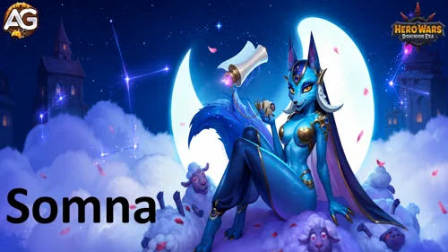

Guía de Somna – Habilidades, Mejores Mascotas y Equipos en Hero Wars
- Por: Alexandre Domingos. .
Somna no entra en una batalla para liderar la tabla de daño. Entra para robar tiempo. Una sola habilidad definitiva puede dormir a todo el equipo enemigo, y cada acumulación de Somnolencia hace que el siguiente intercambio sea más seguro para tu lado.
En mis pruebas, ese control funcionó sorprendentemente bien tanto en equipos físicos como mágicos. Somna le dio a Adam la batalla larga que desea, mientras que Fluffy, Cascade y Krista obtuvieron una heroína de apoyo capaz de interrumpir al enemigo antes de que su presión se derrumbara.


📋 Índice de la Guía de Somna
¿Quién es Somna en Hero Wars: Dominion Era?
Somna es una heroína de control de la línea central cuyo atributo principal es la Agilidad, y su kit gira en torno al Sueño y la Somnolencia. Su habilidad definitiva puede detener a los cinco rivales, mientras que el resto de su kit reduce el Ataque Físico y Mágico de los enemigos, refuerza al aliado que está delante y convierte en ovejas huidizas a los rivales muy afectados.
Mi punto de vista es sencillo: Somna alcanza su mejor nivel cuando el equipo tiene un motivo para ganar tiempo. Ella no remata a los rivales por sí sola; crea silencio entre sus ataques para que Adam, Fluffy, Cascade, Krista u otra condición de victoria tome el control.

- Rol Principal: Control
- Atributo Principal: Agilidad
- Posición: Lucha en la línea central
- Patronazgo: Fenris, Oliver, Axel
- Piedras de Alma: No disponibles temporalmente
Somna - Estadísticas Máximas en Hero Wars Dominion Era
| Estadística | Valor | Estadística | Valor |
|---|---|---|---|
| Inteligencia |  2.965 2.965 |
Salud |  446.752 446.752 |
| Ataque Físico |  92.033 92.033 |
Ataque Mágico |  17.463 17.463 |
| Armadura |  37.149 37.149 |
Defensa Mágica |  37.594 37.594 |
| Penetración de Armadura |  17.900 17.900 |
Fuerza |  2.700 2.700 |
| Resistencia a Golpes Críticos |  16.881 16.881 |
Precisión |  16.881 16.881 |
| Agilidad |  16.881 16.881 |
Poder |  173.612 173.612 |
Ventajas y Desventajas de Somna - Hero Wars: Web & Facebook
✅ Ventajas
- Control de todo el equipo: Velo de Nana puede dormir a toda la formación enemiga durante 7 segundos.
- Excelente apoyo de ritmo: El Sueño y las transformaciones en oveja crean tiempo para que los aliados que escalan se vuelvan peligrosos.
- Reduce ambos tipos de daño: La Somnolencia reduce el Ataque Físico y Mágico, por lo que resulta útil más allá de los enfrentamientos físicos.
- Protege la primera línea: Armadura de Ensueño concede un gran aumento de Armadura al aliado situado delante de Somna.
- Encaja en equipos variados: Mis pruebas dieron buenos resultados en composiciones físicas y mágicas.
❌ Desventajas
- Daño personal bajo: Somna controla la batalla, pero normalmente necesita aliados para asegurar las eliminaciones.
- El Sueño puede terminar antes de tiempo: Los rivales despiertan después de recibir 107.633 de daño, por lo que el daño de área sin controlar puede acortar la pausa.
- Sebastian es un counter directo: Su protección puede bloquear el efecto de control que define la habilidad definitiva de Somna.
- La comprobación de nivel importa: Sus probabilidades de control se reducen contra enemigos que superan el nivel indicado de la habilidad.
- Disponibilidad limitada: Sus Piedras de Alma no están disponibles temporalmente.
Prioridad para Mejorar las Habilidades de Somna - Hero Wars: Dominion Era
Las habilidades de Somna deben mejorarse primero para conseguir un control fiable y después para proteger la primera línea. Su escalado con Ataque Físico mejora los efectos, pero el control sigue siendo el verdadero premio.
1.ª Habilidad - Velo de Nana
Descripción en el juego: Duerme a los Héroes enemigos durante 7s. Los rivales dormidos no pueden actuar, pero pueden despertar antes si reciben 107.633 de daño. La probabilidad de Sueño se reduce si el nivel del objetivo supera 130.
Explicación de la Habilidad: Somna detiene a todo el equipo enemigo. Cada héroe dormido permanece inactivo hasta que terminan los 7 segundos o el daño recibido alcanza el umbral. El umbral no es el daño causado por Somna; es la cantidad de daño que el objetivo dormido puede recibir antes de despertar.
Fórmula - Umbral de Daño: 107.633 (100% de Ataque Físico + 120 × nivel)

Prioridad de Evolución: Muy Alta – Esta es la identidad de Somna y la apertura más fuerte para el equipo. Mantén la habilidad mejorada para que su comprobación de control siga siendo lo más fiable posible.
- Duración: 7 segundos
- Palabras Clave: Definitiva, Sueño, Control
2.ª Habilidad - Armadura de Ensueño
Descripción en el juego: Bendice al aliado situado delante durante 10s. La bendición aumenta su Armadura en 34.110 y añade el efecto Somnolencia a sus ataques básicos. Cada efecto de Somnolencia sobre un rival reduce su Ataque Físico y Mágico en 26.908. El efecto dura 10s y puede aplicarse hasta 3 veces. La probabilidad de Somnolencia se reduce si el nivel del objetivo supera 130.
Explicación de la Habilidad: Somna protege al aliado situado directamente delante y convierte sus ataques básicos en penalizaciones. Con tres acumulaciones, el enemigo puede perder hasta 80.724 de Ataque Físico y Mágico, por eso esta habilidad puede decidir silenciosamente una batalla larga.
Fórmula - Aumento de Armadura: 34.110 (30% de Ataque Físico + 50 × nivel)
Fórmula - Reducción de Ataque por Acumulación: 26.908 (25% de Ataque Físico + 30 × nivel)

Prioridad de Evolución: Alta – Añade defensa y supresión ofensiva en una sola activación, pero apoya el plan de control de Somna en lugar de iniciarlo.
- Recarga Inicial: 10 segundos
- Recarga: 16 segundos
- Duración: 10 segundos
- Máximo de Acumulaciones de Somnolencia: 3
3.ª Habilidad - Contando Ovejas
Descripción en el juego: Maldice un área en el centro del equipo enemigo. Los rivales que están en el área reciben 31.510 de daño y 1 efecto de Somnolencia. Si un enemigo afectado ya tiene 3 efectos de Somnolencia, se transforma en oveja durante 5s. No puede atacar e intenta huir para salvar su vida. La probabilidad de Somnolencia se reduce si el nivel del objetivo supera 130.
Explicación de la Habilidad: Este es el ciclo de control repetido de Somna. El daño físico de 31.510 es modesto, pero la verdadera recompensa es convertir durante 5 segundos a un enemigo con el máximo de acumulaciones en una oveja inofensiva.
Fórmula - Daño Físico: 31.510 (30% de Ataque Físico + 30 × nivel)

Prioridad de Evolución: Muy Alta – Las transformaciones repetidas en oveja son el mejor control de Somna después de su habilidad definitiva, y el nivel de la habilidad influye en la probabilidad de aplicar Somnolencia.
- Recarga Inicial: 5 segundos
- Recarga: 13 segundos
- Duración de la Transformación: 5 segundos
- Palabras Clave: Daño Físico, Somnolencia, Control
4.ª Habilidad - Dominio de la Tranquilidad
Descripción en el juego: Habilidad pasiva. Cuando un rival causa daño a Somna o a los aliados adyacentes, se aplica 1 efecto de Somnolencia al enemigo que causó el daño. Si el daño fue causado por una habilidad definitiva, se aplican 2 efectos de Somnolencia. Este efecto no puede activarse más de una vez cada 1s. La probabilidad de Somnolencia se reduce si el nivel del objetivo supera 130.
Explicación de la Habilidad: Los enemigos ayudan a Somna a desarrollar su control simplemente al atacar su zona. El daño de habilidad definitiva recibe un castigo mayor con dos acumulaciones, lo que crea un camino rápido hacia la transformación de Contando Ovejas.

Prioridad de Evolución: Alta – Acelera todo el motor de Somnolencia de Somna, especialmente contra el daño de área y de habilidades definitivas, pero aún necesita sus habilidades activas de control para aprovechar esas acumulaciones.
- Recarga: 1 segundo por activación
- Palabras Clave: Pasiva, Somnolencia, Control
Mejores Skins para Somna en Hero Wars: Dominion Era
La Skin Solar de Somna es claramente la primera inversión porque todos los efectos numéricos de su kit activo escalan con Ataque Físico, mientras que la Agilidad sigue siendo su base equilibrada.

Skin Predeterminada
Aumento de Estadística: Agilidad +1.365
- Ataque Físico proveniente de la Agilidad: +4.095
- Armadura proveniente de la Agilidad: +1.365
Prioridad de Evolución: Alta – La Agilidad le da a Somna Ataque Físico para sus fórmulas y Armadura para sobrevivir, lo que la convierte en una segunda prioridad fuerte y completa.
Total de Piedras de Skin de Agilidad para el nivel máximo:  30.825
30.825

Skin Solar
Aumento de Estadística: Ataque Físico +7.095
Prioridad de Evolución: Muy Alta – El Ataque Físico aumenta el umbral para despertar de Velo de Nana, el aumento de Armadura y la reducción de Ataque de Armadura de Ensueño y el daño de Contando Ovejas. Ninguna otra skin de Somna afecta tantas fórmulas.
Total de Piedras de Skin de Agilidad para el nivel máximo:  55.410
55.410
Nota: La Skin Solar es exclusiva el 24 de julio y está previsto que pueda desbloquearse de forma general el 1 de diciembre.
Prioridad de Evolución de los Glifos de Somna
Primero priorizo el escalado de la utilidad de Somna: Ataque Físico, después Agilidad, Salud y Defensa Mágica. La Penetración de Armadura queda al final porque causar daño no es su función principal.
1.er Glifo - Ataque Físico
Aumento de Estadística: Ataque Físico +4.340
Prioridad de Evolución: Muy Alta – Mejora directamente todas las fórmulas numéricas de las habilidades activas de Somna, incluidos dos efectos defensivos.
2.º Glifo - Penetración de Armadura
Aumento de Estadística: Penetración de Armadura +6.500
Prioridad de Evolución: Baja – Solo ayuda al modesto daño físico de Somna y no aporta nada al Sueño, la Somnolencia, la protección de Armadura ni la reducción de Ataque.
3.er Glifo - Salud
Aumento de Estadística: Salud +62.200
Prioridad de Evolución: Media Alta – Una Somna viva continúa acumulando Somnolencia. La Salud es especialmente valiosa contra el daño mixto y puro, que no puede resolverse con una sola estadística defensiva.
4.º Glifo - Defensa Mágica
Aumento de Estadística: Defensa Mágica +6.500
Prioridad de Evolución: Media – Es útil contra la explosión de daño mágico, pero resulta más limitada que la Salud y no mejora las fórmulas de control de Somna.
5.º Glifo - Agilidad
Aumento de Estadística: Agilidad +1.135
- Ataque Físico proveniente de la Agilidad: +3.405
- Armadura proveniente de la Agilidad: +1.135
Prioridad de Evolución: Alta – En la práctica, la Agilidad es la segunda mejor mejora porque aumenta tanto el escalado de Somna como su durabilidad física.
Prioridad de Evolución de los Artefactos de Somna en Hero Wars: Dominion Era
Los artefactos de Somna siguen dos direcciones: supervivencia permanente y escalado con Ataque Físico para ella, o una bonificación temporal de Defensa Mágica para todo el equipo.

Artefacto Las Mil y Una Nanas
Bonificación para el Equipo: Defensa Mágica +50.190
Prioridad de Evolución: Media Alta – Se activa con Velo de Nana y puede proteger a todo el equipo de las represalias mágicas, pero su valor es temporal y depende del enfrentamiento.

Artefacto Pacto del Defensor
Aumento de Estadísticas: Armadura +12.546
Defensa Mágica +12.546
Prioridad de Evolución: Alta – Las defensas equilibradas mantienen a Somna activa contra equipos físicos y mágicos, algo más valioso que perseguir su daño personal.

Artefacto Anillo de Agilidad
Aumento de Estadística: Agilidad +6.249
- Ataque Físico proveniente de la Agilidad: +18.747
- Armadura proveniente de la Agilidad: +6.249
Prioridad de Evolución: Muy Alta – Este es el artefacto más completo de Somna: fortalece todas las fórmulas de Ataque Físico y añade Armadura al mismo tiempo.
Mejor Patronazgo para Somna
Solo Fenris, Oliver y Axel pueden patrocinar a Somna. Fenris maximiza su escalado con Ataque Físico, mientras que Oliver y Axel cambian parte de la ofensiva por supervivencia.
1.er Lugar:

Fenris es mi primera opción cuando Somna está lo bastante segura para jugar de forma agresiva. Su Ataque Físico aumenta todas las fórmulas de ella, la Penetración de Armadura mejora el daño de Contando Ovejas y Furia Ciega puede añadir 2 segundos de Ceguera a sus ataques básicos.
2.º Lugar:

Oliver es la mejor opción de sustain y funcionó bien en la composición mágica probada. La Salud, la Armadura y las curaciones repetidas ayudan a Somna a sobrevivir lo suficiente para repetir el ciclo de Somnolencia y las transformaciones en oveja.
3.er Lugar:

Axel es la opción para protegerse del daño explosivo. Burbuja Defensiva impide que un solo golpe elimine demasiada Salud Máxima de Somna, aunque la estadística de Ataque Mágico de su patronazgo aporta poco a las fórmulas de Ataque Físico de ella.
Cómo Derrotar a Somna en Hero Wars Dominion Era
La amenaza de Somna se concentra en el control. La respuesta más directa es un héroe que impida ese control antes de que sus aliados puedan aprovechar el tiempo libre.

Sebastian es el counter directo de Somna porque su protección contra el control puede bloquear el Sueño e impedir que la habilidad definitiva de ella paralice a todo el equipo. Sin esa larga pausa, Somna tiene mucho menos tiempo para convertir las acumulaciones de Somnolencia en transformaciones de oveja. Khorus no debe tratarse como la misma respuesta: el Sueño de Somna no es bloqueado específicamente por Khorus.
Consejo de Alexandre: ¿Por qué Khorus no bloquea el Sueño de Somna?
Porque la habilidad de Khorus simplemente no fue programada para bloquear el efecto Sueño .
El Indomable, la habilidad pasiva de Khorus, bloquea solamente los siguientes efectos de control:
- Silencio
- Encanto
- Ceguera
- Aturdimiento
- Control Mental
El Sueño no está incluido en esa lista oficial. En la práctica, esto significa:
- ✅ Silencio de Keira → Khorus puede bloquearlo.
- ✅ Aturdimiento de Arachne → Khorus puede bloquearlo.
- ✅ Control Mental de Phobos → Khorus puede bloquearlo.
- ❌ Sueño de Somna → Khorus no lo bloquea.
Mejores Banderas de Guerra para Somna en Hero Wars
Somna se beneficia más de las banderas que fortalecen la mascota activa del equipo o hacen que el ciclo de habilidades del enemigo sea menos fiable mientras se desarrolla su motor de control.

Bandera de Guerra de Fuerza de Mascotas
Beneficio para Somna y el Equipo: Los dos equipos probados usan a Axel como mascota principal. Aumentar un 10% el Poder de Habilidad de la mascota mejora la protección que ayuda a estas composiciones de batalla larga a sobrevivir hasta que Somna y sus atacantes tomen el control.

Bandera de Guerra de Escarcha
Beneficio para Somna y el Equipo: Escarcha reduce los niveles de las habilidades enemigas cada 18 segundos durante 8 segundos. Encaja con la identidad disruptiva de Somna y debilita las ventanas de las habilidades clave del rival mientras su equipo busca una batalla más larga.
Mejores Equipos para Somna - Hero Wars: Dominion Era
Estas son las dos composiciones que más destacaron en mis pruebas. Ambas usan a Axel como mascota principal, pero una apuesta por la presión física de Adam en batallas largas, mientras que la otra apoya un núcleo con mucho daño mágico.
Análisis del Equipo 1: Núcleo de Batalla Larga con Somna y Adam
Este equipo plantea una pregunta: ¿puede el enemigo terminar la batalla antes de que Adam se vuelva abrumador? Julius y Axel aportan durabilidad, Byrna sostiene la batalla larga, Fluffy añade presión y Somna interrumpe repetidamente al rival. Adam se beneficia directamente porque cada ciclo adicional de control le da más tiempo para fortalecerse.
| Somna - Mejor Equipo #1 | |||||
|---|---|---|---|---|---|
Análisis del Equipo 2: Somna como Apoyo para el Meta Mágico
Somna demostró que no necesita un carry físico para ser relevante. Con Fluffy, Cascade y Krista, su trabajo es crear ventanas seguras para la presión mágica mientras Byrna y Axel mantienen estable la formación. El patronazgo de Oliver es importante porque el objetivo no es el daño de Somna, sino mantenerla viva para otro ciclo de control.
Conclusiones sobre Somna - Hero Wars: Dominion Era
Somna es el tipo de heroína cuyo mejor trabajo ocurre entre los momentos evidentes. Interrumpe una habilidad definitiva, debilita a un atacante, protege al aliado que está delante y, de repente, tu atacante ha sobrevivido el tiempo suficiente para ganar.
Según mis pruebas, yo no la limitaría a un solo arquetipo. Fue convincente junto a Adam en un núcleo físico de batalla larga e igualmente interesante como apoyo de control para Fluffy, Cascade y Krista. Si te gustan los equipos que ganan mediante ritmo y presión en lugar de una apertura explosiva, Somna merece tu atención.
¡Explora nuevas habilidades con nuestras guías destacadas!


¡Deja tu Opinión!
¿Te gustó nuestra Guía de Somna para Hero Wars: Dominion Era? ¿Hay algo que no entendiste o te gustaría sugerir cambios? Te invitamos a participar en la sección de comentarios de la página del Blog Alexandre Games. Puedes expresar tu opinión, aclarar tus dudas y compartir tus sugerencias libremente.
Haz clic en el botón de abajo para comenzar: